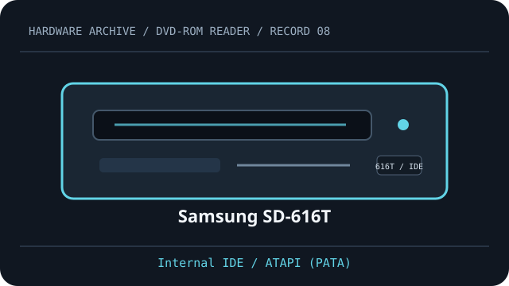

[ DVD-ROM READERS // IDENTIFIED MODEL ]
Samsung SD-616T
Read-only DVD-ROM/video and CD media support. Rated maximums and host setup below are specific to Samsung SD-616T; verify the complete OEM suffix and firmware on the label.

IDENTIFICATION: Compare the full model, suffix, OEM part number and firmware to the cited documentation before fitting, servicing, or attempting preservation reads.
Documented specifications
| Catalog subcategory | DVD-ROM readers (read-only model class) |
|---|---|
| Exact model | Samsung SD-616T |
| DVD read formats | DVD-ROM, DVD-Video |
| DVD read speed | up to 16×; vendor maximum, not a sustained guarantee |
| CD read formats | CD-ROM, CD-DA (audio CD) |
| CD read speed | up to 48×; vendor maximum, media and mode dependent |
| Interface | Internal IDE / ATAPI (PATA) |
| Bay and mechanism | 5.25-inch half-height tray-load bay; measure chassis depth, faceplate and mounting points before installation. |
| Host compatibility | Requires an IDE/ATAPI host controller and PATA cabling. DVD-Video playback depends on compatible operating-system software and region configuration. |
| Firmware, region and jumper caveats | Set the IDE jumper as Master, Slave or Cable Select according to the host cable and drive label. Region changes are controlled by drive firmware/player; exact behavior can depend on firmware and OEM variant. |
Host fit & preservation notes
- Requires an IDE/ATAPI host controller and PATA cabling. DVD-Video playback depends on compatible operating-system software and region configuration.
- Set the IDE jumper as Master, Slave or Cable Select according to the host cable and drive label. Region changes are controlled by drive firmware/player; exact behavior can depend on firmware and OEM variant.
- Read ratings do not imply write capability. Treat writable/rewritable media as supported only when this exact model manual explicitly lists it.
- For imaging, record the complete drive label, OEM suffix, firmware, host controller, software, disc type and read errors; retain checksummed images and logs.
- Handle discs by the edge or center hole; use a clean case in cool, dry storage away from direct sunlight. Avoid adhesive labels, abrasives and undocumented polishing/solvents.
Optical media access is sensitive to disc condition, firmware and host software. A published peak “×” rating is a format-specific maximum, not guaranteed throughput.
Model documentation
- Samsung SD-616T user manual (ManualsLib)Model-specific manual with supported media, maximum read rates and interface/configuration details.
- Samsung SD-616T user manual (ManualsLib)Archived Samsung SD-616 user guide; compare the pictured model/revision to the full SD-616T unit label.